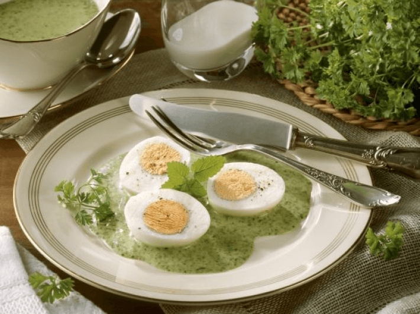

Grüne Soße mit Eiern (V)
(25 Min., 4 Port.)

Zutaten
- 8 Eier, 1 Schalotte, 2 Handvoll frische Kräuter z. B. Schnittlauch, Petersilie, Kresse, Kerbel, Borretsch, Sauerampfer, Pimpinelle), 3 EL Olivenöl, 1 TL scharfer Senf, 150 g Joghurt, 250 g saure Sahne
Zubereitung
- Die Eier hart kochen, abschrecken, schälen und 2 davon mit einer Gabel fein zerdrücken oder durch ein Sieb streichen.
- Die Schalotte schälen und fein hacken. Die Kräuter waschen, trocken schütteln, abzupfen und mit einem Wiegemesser sehr fein hacken.
- Das Öl mit der Schalotte, dem Senf, dem Joghurt und der sauren Sahne verrühren und das zerdrückte Ei und die gehackten Kräuter untermengen. Mit Zitronensaft, Salz und Pfeffer abschmecken.
- Die restlichen Eier halbieren und jeweils 3 Hälften mit der Sauce auf Tellern anrichten.
Originalrezept unter: Eatsmarter.de
Optionale Beilage: Butter-Kohlrabi
Zutaten:
- 1,2 kg Kohlrabi, 20 g Butter, Salz & Pfeffer
Zubereitung:
- Kohlrabi in salzkartoffelgroße Stücke schneiden.
- Kohlrabi in Salzwasser für 20 Minuten kochen.
- Abgießen und in warmer Butter schwenken. Mit Salz & Pfeffer abschmecken.